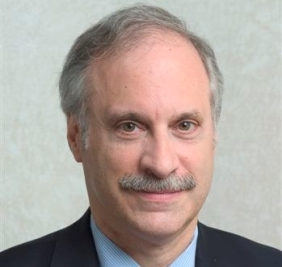

Peter C. Fusaro is a best selling author, keynote speaker and thought leader on emerging energy and environmental financial markets. He is Chairman of Global Change Associates an energy and environmental consultancy in New York since 1991 and is the best selling author of What Went Wrong at Enron as well as 15 other books on energy and the environmental financial markets. Peter's latest book will be published in 2010 by Oxford University Press on Energy and Environmental Project Finance Law and Taxation: New Investment Techniques. Peter is has been on the forefront of energy and environmental change for over 36 years focusing emissions, energy efficiency, cleantech, carbon trading and renewable energy markets. Peter has worked over 20 years on climate change issues and is currently advising on carbon trading and finance as well as clean energy technology and renewable energy to companies worldwide. Peter was selected for Who's Who in America for 2007-2012 and Who's Who in the World for 2009-2012. He coined the term "Green Trading" and holds the annual Wall Street Green Summit XI each spring (www.wsgts.com). Peter is advisor to 8 cleantech software and hardware companies in the US and UK. In 2009, Peter launched the Global Change Foundation focused on environmental education and projects (www.global-changefoundation.com) and held its first Green Jobs Summit in March 2010. The foundation also runs the Green Salon where artists perform and environmental experts speak. Peter graduated with an MA in international relations from Tufts University and a BA from Carnegie-Mellon University. He is an adjunct professor at Columbia University's School of International and Public Affairs where he teaches renewable energy project finance. He is on the Advisory Board of the ERB Institute for Global Sustainable Enterprise, Ross School of Business, University of Michigan as well as on the Board of Trustees of the UN's Energy & Water Institute of New York.